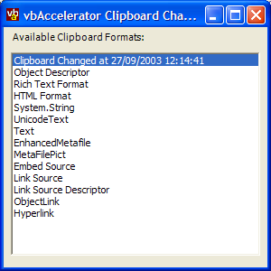

Clipboard Change Notification (50K)
Clipboard Change Notification (50K)
 27 Sep 2003
27 Sep 2003
First Posted

Receiving and Using Clipboard Change Notifications
A component to assist in building a VS.NET Clipboard Ring or Office Clipboard TaskPane
Clipboard support in the .NET Framework is fairly comprehensive, however, support for notification of clipboard changes is not provided. Knowing when the clipboard changes makes building an application with a toolbar containing a Paste button simpler; it also enables you to store a history of clipboard changes like the VS.NET Clipboard Ring or the Office Clipboard Taskpane (VB.NET and C# versions provided).
About Clipboard Change Notification
The Windows API supports the notion of a "Clipboard Viewer" application. The original intention of this application was to display what was currently on the clipboard to use, however, since the API primarily involves notifying the application when the clipboard changes, and doesn't contain anything specific to displaying the content the API can also be used in any application which wants to know when the clipboard changes.
Clipboard Viewer applications are chained, so there can be more than one application on the system which acts as a Clipboard Viewer. An application which has registered itself as a viewer is responsible for notifying any subsequent clipboard viewer application of the change to the clipboard. Unfortunately, the designers of the API chose to make each Clipboard Viewer responsible for storing and managing the next item in the chain, rather than managing the list internally within Windows itself. This means that individual applications need to be notified when the immediate chain changes, and can lead to brittleness in the chain if applications behave badly. Another consequence is that you absolutely must unregister from the chain prior to your application's Window procedure being destroyed, otherwise the notifications to fix up the chain will not be processed. I'm sure the code review for this feature (if there ever was one) would have been fun.
The ClipboardChangeNotifier class provided with the download wraps up the details of interacting with this API and makes sure that your application will be well-behaved.
Using the Clipboard Change Notification Class
This is straightforward. Two prerequisites:
- Your application requires a Form as notifications are sent to a Window Procedure. The Form can be hidden if you want.
- The resulting assembly will require permissions to access the clipboard and to run unmanaged code (these permissions are included in the class).
Add ClipboardChangeNotifier.cs and Win32Error.cs to your project. Then create an instance of the ClipboardChangeNotiifer class and hook up the ClipboardChanged event. Finally, assign the Handle of the form and install the notifier using the Install method.
using vbAccelerator.Components.Clipboard;
...
private ClipboardChangeNotifier clipChange = null;
...
private void frm_Load(object sender, System.EventArgs e)
{
this.clipChange = new ClipboardChangeNotifier();
this.clipChange.ClipboardChanged += new EventHandler(
clipChange_ClipboardChanged);
// Using the Load event ensures that the handle has been
// created:
this.clipChange.AssignHandle(this.Handle);
this.clipChange.Install();
}
During the clipboard changed event it's a good idea to put a DoEvents call in. This prevents problems with some applications idling whilst they are populating the clipboard (Eclipse 2 is the only application I've seen which does this):
private void clipChange_ClipboardChanged(object sender, EventArgs e)
{
Application.DoEvents();
// use the Clipboard object as normal to read
// the contents here
ReadClipboardContents();
}
One final thing to note is that the Handle of a Form can change. This only occurs when you modify a .NET property which requires the underlying Window to be recreated, such as ShowInTaskBar. When the Form is recreated, the class will automatically unhook clipboard changes for you, but it cannot automatically re-install them. You can override the form's OnHandleCreated event to ensure notification is always installed:
protected override void OnHandleCreated(EventArgs e)
{
base.OnHandleCreated(e);
if (this.clipChange != null)
{
this.clipChange.AssignHandle(this.Handle);
this.clipChange.Install();
}
}
In Detail
The code for implementing the Clipboard Change Notification is fairly short. As it is necessary to respond to a messages sent to a Window, the best starting point is the .NET Framework NativeWindow class, as described in the article Subclassing in .NET. This provides all the code we need to subclass a Window procedure and start receiving messages, so next the API calls for the Clipboard viewer can to be implemented. There are three API calls you need:
- SetClipboardViewer - Adds a window to the clipboard viewer chain.
- ChangeClipboardChain - Allows the window to be removed from the clipboard viewer chain.
- SendMessage - To pass on any clipboard change notifications to the next window in the chain.
The declares are:
[DllImport("user32")]
private extern static IntPtr SetClipboardViewer (
IntPtr hWnd);
[DllImport("user32")]
private extern static int ChangeClipboardChain (
IntPtr hWnd,
IntPtr hWndNext);
[DllImport("user32", CharSet=CharSet.Auto)]
private extern static int SendMessage (
IntPtr hWnd,
int wMsg,
IntPtr wParam,
IntPtr lParam);
Next there are the messages to respond to:
- WM_DRAWCLIPBOARD (0x308) - notifies that the clipboard has changed.
- WM_CHANGECBCHAIN (0x30D) - occurs when a clipboard viewer is added or removed to the clipboard chain and you need to update the reference to the next handle in the chain.
- WM_DESTROY (0x2) - as noted earlier, every application on the clipboard viewer chain is responsible for maintaining the chain. That means is is vital to call ChangeClipboardChain prior to the Window being destroyed. The WM_DESTROY message is sent to all Windows just before the Window is destroyed and whilst the Window procedure is still valid so is the ideal place to ensure this has happened. Note that the .NET Framework OnHandleChanged event cannot be used because it occurs after the window handle has been destroyed.
With these elements in place, the class can be implemented. Two variables are needed to store handles: one for the handle of the Form that is used to receive the clipboard change notifications and one for the next handle in the chain:
////// The next handle in the clipboard viewer chain when the /// clipboard notification is installed, otherwise protected IntPtr nextViewerHandle = IntPtr.Zero; ////// /// The Window clipboard change notification was installed for. /// protected IntPtr installedHandle = IntPtr.Zero;
Next, the procedures for installing and uninstalling the application into the clipboard viewer chain:
////// Installs clipboard change notification. The /// public void Install() { this.Uninstall(); if (!this.Handle.Equals(IntPtr.Zero)) { this.nextViewerHandle = SetClipboardViewer(this.Handle); this.installedHandle = this.Handle; } } ///method of this class /// must have been called first. /// /// Uninstalls clipboard change notification. /// public void Uninstall() { if (!this.installedHandle.Equals(IntPtr.Zero)) { ChangeClipboardChain(this.installedHandle, this.nextViewerHandle); int error = System.Runtime.InteropServices.Marshal.GetLastWin32Error(); Debug.Assert(error==0, String.Format("{0} Failed to uninstall from Clipboard Chain", this), Win32Error.ErrorMessage(error)); this.nextViewerHandle = IntPtr.Zero; this.installedHandle = IntPtr.Zero; } }
The ErrorMessage method can somethimes be useful for debugging problems with Win32 API calls and normally provides a more descriptive message for any API error. In production code you can remove the Assert call and the Win32Error class as you would not expect to get this problem (even if you do, there would be nothing you could do; the error is fatal for the clipboard viewer chain).
With methods in place for installing and removing handles, all that remains is to handle the messages by overriding the OnWndProc method. The code is shown below:
////// Provides default WndProc processing and responds to /// clipboard change notifications. /// /// protected override void WndProc(ref Message e) { // if the message is a clipboard change notification switch (e.Msg) { case WM_CHANGECBCHAIN: // Store the changed handle of the next item // in the clipboard chain: this.nextViewerHandle = e.LParam; if (!this.nextViewerHandle.Equals(IntPtr.Zero)) { // pass the message on: SendMessage(this.nextViewerHandle, e.Msg, e.WParam, e.LParam); } // We have processed this message: e.Result = IntPtr.Zero; break; case WM_DRAWCLIPBOARD: // content of clipboard has changed: EventArgs clipChange = new EventArgs(); OnClipboardChanged(clipChange); // pass the message on: if (!this.nextViewerHandle.Equals(IntPtr.Zero)) { SendMessage(this.nextViewerHandle, e.Msg, e.WParam, e.LParam); } // We have processed this message: e.Result = IntPtr.Zero; break; case WM_DESTROY: // Very important: ensure we are uninstalled. Uninstall(); // And call the superclass: base.WndProc(ref e); break; default: // call the superclass implementation: base.WndProc(ref e); break; } }
Conclusion
You easily start receiving clipboard change notifications using the ClipboardChangeNotifier class provided with this article. This provides the basis for writing functionality like the VS.NET style Clipboard Ring or the Office Clipboard Taskpane.